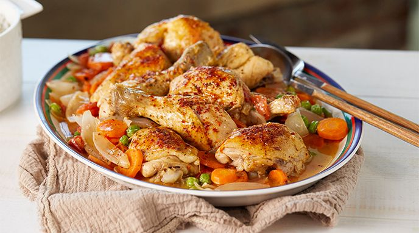

Ingredientes para preparar Pollo a la cacerola:
Sigue la receta para preparar
Pollo a la Caserola.Un platillo que no te decepcionara.
Ingredientes:
pasos de preparacion:
1.Las piezas de pollo se lavan y secan bien.
2.Luego se ponen a dorar en una cacerola en 50 gramos de mantequilla derretida con el tocino picado.
3.Se agregan las cebollas rebanadas, volteando las piezas de vez en cuando.
4.Añadir los jitomates picados, las hojas de laurel y un ramito de perejil.
5.Condimentar con sal, pimienta, los cubos de consome concentrado y medio litro de agua.
6.Cuando empieza a hervir añada los chicharos previemente cocidos y deje que ablande la carne a fuego lento.